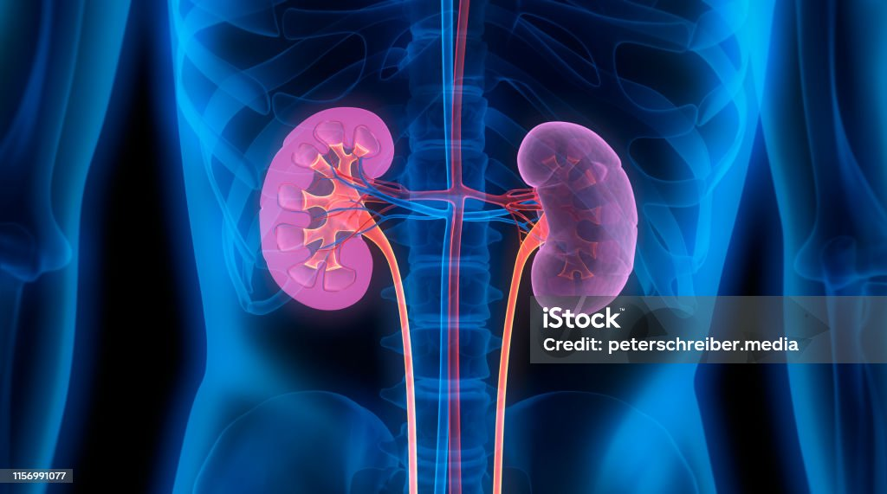
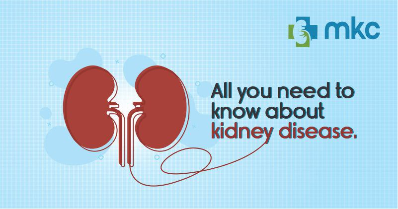

About Kidney Health
Kidneys are vital organs performing 24/7 filtration, hormonal control, and fluid management. Learn how they work, examine key statistics, and debunk common myths.

What Are Kidneys?
Two bean-shaped organs filtering waste, maintaining electrolyte balance, and producing vital hormones.
Explore Anatomy
Health Statistics
1 in 10 adults globally and 1 in 7 in the US are affected by chronic kidney conditions.
View Insights
Myths & Facts
Separating misconceptions from medical truths to ensure early detection and proactive care.
Read MythsWhat Are Kidneys? (Anatomy & Functions)
Kidneys are two bean-shaped organs located in the back, just below the rib cage on either side of the spine. Each kidney is roughly the size of a fist and filters approximately 120 to 150 quarts of blood daily to produce 1 to 2 quarts of urine.
Core Functions:
- Waste Filtering: Removes metabolic wastes, urea, and excess toxins from the bloodstream.
- Fluid & Electrolyte Balance: Keeps sodium, potassium, and acid-base levels in tight equilibrium.
- Blood Pressure Regulation: Secretes renin to help manage vascular tension.
- Red Blood Cell Production: Generates erythropoietin (EPO), stimulating bone marrow to produce red blood cells.
- Bone Health: Converts vitamin D into its active form for strong bones.
Internal Structure:
- Renal Cortex: The outer protective layer containing blood vessels and glomeruli.
- Renal Medulla: The inner region containing renal pyramids that collect urine.
- Nephrons: Over 1 million microscopic filtering units in each kidney.
- Ureters: Muscular tubes that transport urine from kidneys down to the bladder.
Kidney Health Statistics & Risk Factors
Kidney disease is among the fastest-growing noncommunicable health challenges worldwide.
Detailed Statistical Insights:
| Demographic / Category | Prevalence & Clinical Impact |
|---|---|
| Older Adults (65+) | 1 in 5 men and 1 in 4 women aged 65–74, and half of adults 75+, have some degree of CKD. |
| Diabetes & Hypertension | Account for approximately 75% of all new cases of end-stage renal failure. |
| Racial & Ethnic Disparities | Compared to white Americans, Black Americans are 4x, Hispanic Americans 2x, and Native Americans 2x more likely to develop kidney failure. |
| New Kidney Failure Cases | Over 130,000 Americans are diagnosed each year, with 97% requiring immediate dialysis. |
Myths vs. Facts About Kidney Disease
Clarifying common misunderstandings helps people seek timely medical care.